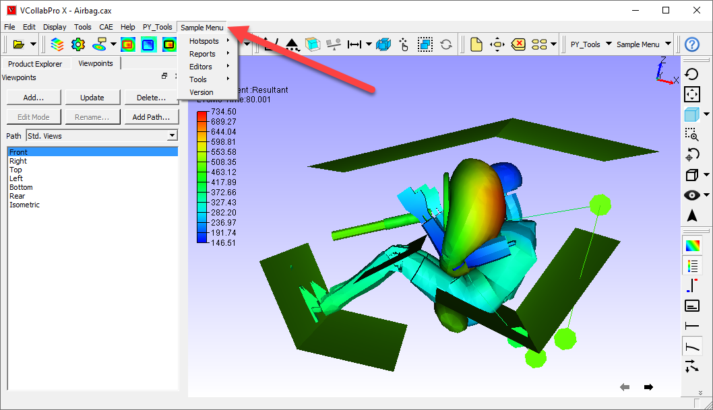
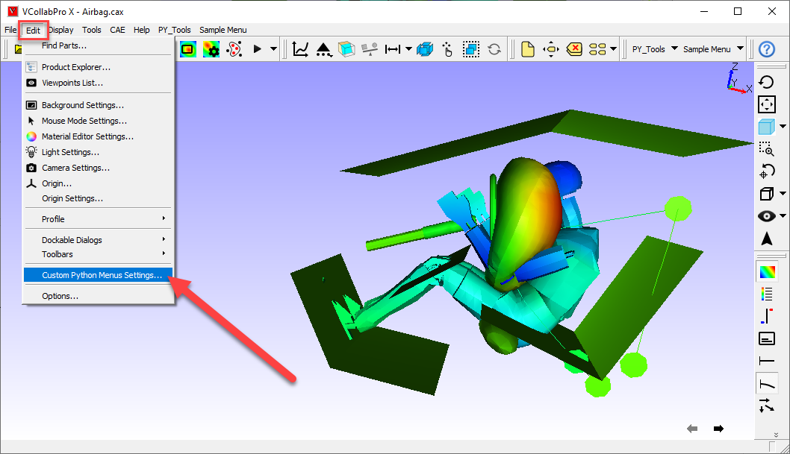
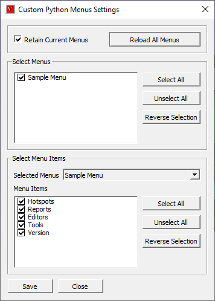
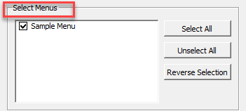
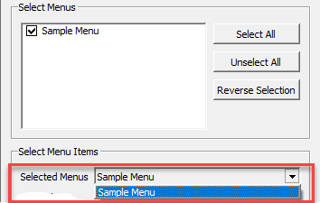
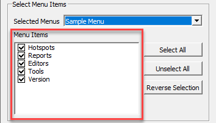
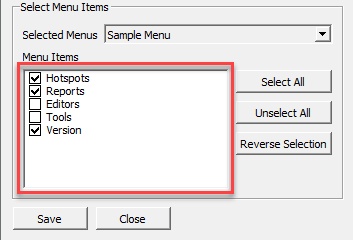
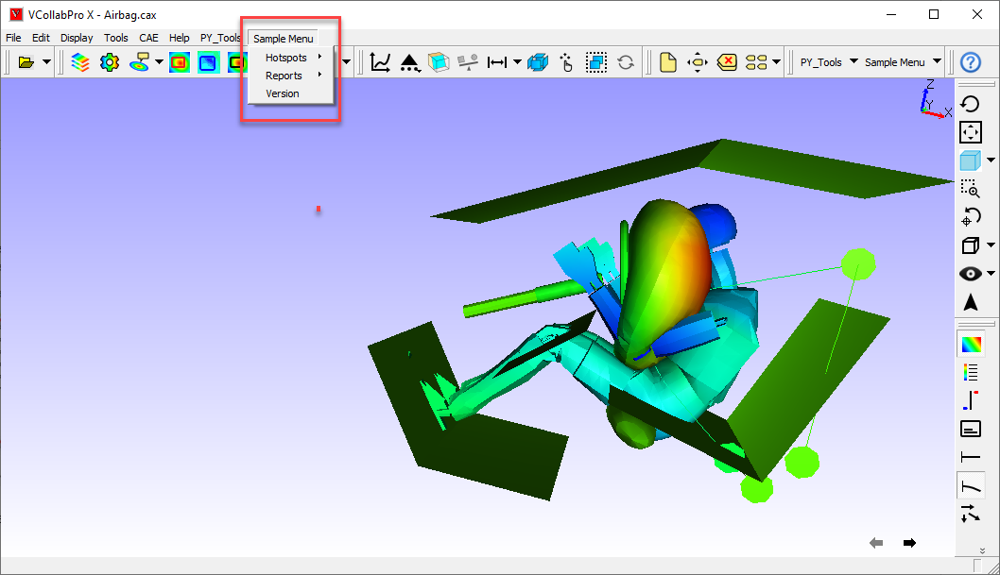
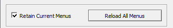

Custom Python Menus Settings¶
The Custom Python Menus Settings option allows VCollabPro users to dynamically load and unload the custom Python menus. The custom Python menus are loaded from JSON files that are placed in the folder referred to by the environment variable VCOLLAB_PLUGIN_PATH. One JSON file can be used for one custom menu. The sample JSON file is available “ ../VCollab/xx.x/Samples/Custom Python Menu” folder
Note
The JSON file name must start with ‘VC_PyMenu’
The following is the JSON file structure. The JSON file should have the header “VCOLLAB_CUSTOM_PY_MENU”. This JSON file has the flexibility of adding multiple levels of submenus in a menu
- {
“VCOLLAB_CUSTOM_PY_MENU”: [
- {
“MainMenu”: “Sample Menu”,
“ScriptFolder”: “”,
“MenuItems”: [
- {
“Name”: “Hotspots”, “MenuItems”: [
- {
“Name”: “Find Hotspots”,
“Script”: “Sample_Menu/FindHotspots.py”
},
- {
“Name”: “Part Hotspots”,
“Script”: “Sample_Menu/PartHotspots.py”
},
- {
“Name”: “Hotspots Table”,
“Script”: “Sample_Menu/HotspotTable.py”
}
]
}
]
}
]
}
The VCollabPro reads all the custom Python menu JSON files and adds all the custom menus when the user opens the application as shown in the screenshot below 
The user can choose to show or hide the menu and level-1 menu items from the custom menu. The function ‘Edit | Custom Python Menu Settings…’ will provide the interface to show or hide menus and level-1 menu items 
The user interface for the settings is below.

Once the above window is launched, it shows information about the current custom menus. The ‘Select Menus’ will list out all the menu titles from the JSON files
 The menus that are in a ‘checked’ state are considered to be added to the menu bar of the application. The ‘unchecked’ menus are ignored. The ‘Select All’ , ‘Unselect All’, and ‘Reverse Selection’ options allow the user to change the selection state of the menus
The selected menus from the ‘Select Menus’ are populated with the ‘Selected Menus’ drop-down list as shown below

Once the menu is selected from the ‘Selected Menus’ drop-down list, the level-1 menu items of the menu are populated in the ‘Menu Items’ list as shown below.

The menu items that are in a ‘checked’ state are considered to be added to the menu. The ‘unchecked’ menu items are ignored. The ‘Select All’ , ‘Unselect All’, and ‘Reverse Selection’ options allow the user to change the selection state of the menu items
Save
When the ‘Save’ button is clicked, the current custom menus that are available in the menu bar are removed and the selected menus with the selected menu items are added to the menu bar. For example, the following is the user’s choice.

Once the ‘Save’ is clicked, the new menu will appear as below

Now these settings are saved locally, and when the user opens the application next time, VCollabPro brings the user’s choice menu and menu items, These menus and menu items are shown in VCollabPro until it’s saved with the different settings.
Reload All Menus

This function imports all menus from the JSON files present in the VCOLLAB PLUGIN PATH directory. It fully depends on the ‘Retain Current Menus’ option
When “Retain Current Menus” is selected, the existing menus are retained while the remaining menus are brought in from the VCOLLAB PLUGIN PATH. The current menus are removed when this option is unchecked, and all menus from the VCOLLAB PLUGIN PATH are brought in.